Sales Applications: audit
We surveyed Aya's prototype (desktop and mobile) on 21 Oct 2026 at 1440px and 375px, as Salesperson and Sales Manager. Then we compared it with the 15 stories under FIN-26379. The stories are "Ready for Development", so the redesign keeps every rule, field, validation and status and changes only layout, flow, hierarchy and copy. When the prototype and a story disagree, the story wins (see "Prototype vs stories").
Application form (Salesperson)
This is where a salesperson spends most of their time. Three numbered cards are stacked on one page, and Service Setup has its own 4-step stepper inside card 3.
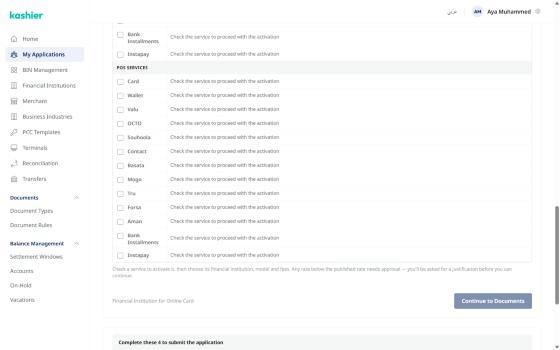
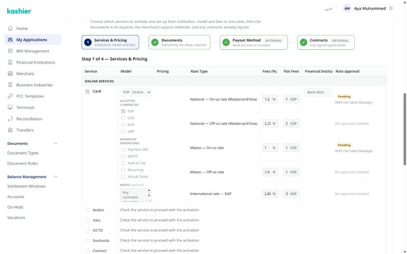
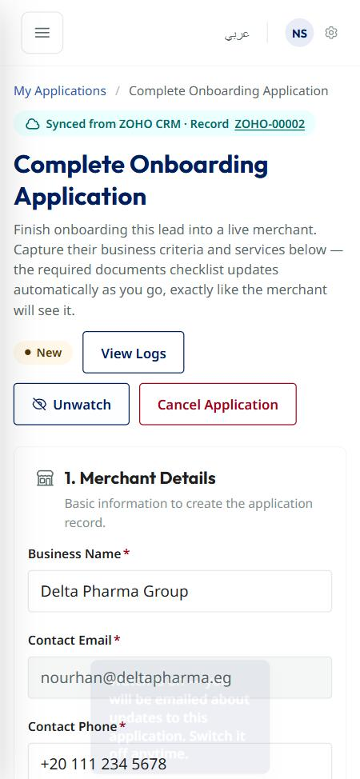
Adding a service, step by step
We added Card, Wallet, Valu, Bank Installments and POS Card to a new application (Nile Bites, Registered Business, Food & Beverage) as a Salesperson at 1440px. Each service type opens differently, but they all share the same 8-column row.
| Service | What checking it adds | Story |
|---|---|---|
| Online Card, PF | Model (PF by default), EGP locked with a hint, 5 advanced operations, Notes, "View service pricing", 2 rate rows (Local rates, International — EGP) and an institution select. That's 13 controls before a single rate is entered. | FIN-28405 |
| Online Card, PSP | Switching the model unlocks USD / EUR / GBP and turns 2 rate rows into 5 (four domestic + International). Nothing says the rows changed. | FIN-28405 |
| POS Card | The same as Online Card, but with Auth & Cap only. A required Number of Terminals field appears in the "POS Services" group header, separate from the POS rows. | FIN-28405 · 28493 |
| Wallet, Valu, OCTO… (11 services) | Model, pricing button and one "Selling rate" row. 2 numbers spread across 7 columns. | FIN-28405 |
| Bank Installments | Selling rate + institution. Once an institution is picked, "+ Add institution" adds a second full row: a second checkbox, model, pricing button and the service name again. Only that second row has "Remove". | FIN-28429 |
| Pricing drawer | Rules sorted cheapest first, BEST pre-selected, and a switch for advanced rates. "Add rates" fills the row and the institution. With advanced rates on, the Card row grows to 5 rows of the same value (1.66% + 1.9 EGP ×4). | FIN-28414 |
| Rate below published | We typed 0.5% on Wallet (published 1%). The row shows nothing, and the footer still says "This step is complete." You find out only when "Continue to Documents" opens the approval modal, and that modal doesn't show the published rate you went below. | FIN-28503 |
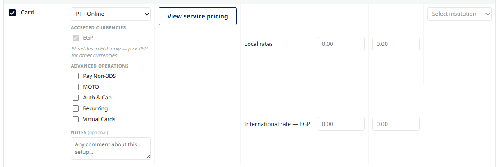
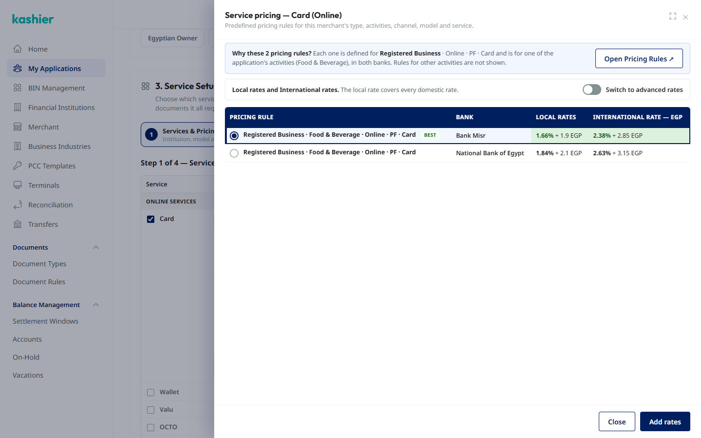
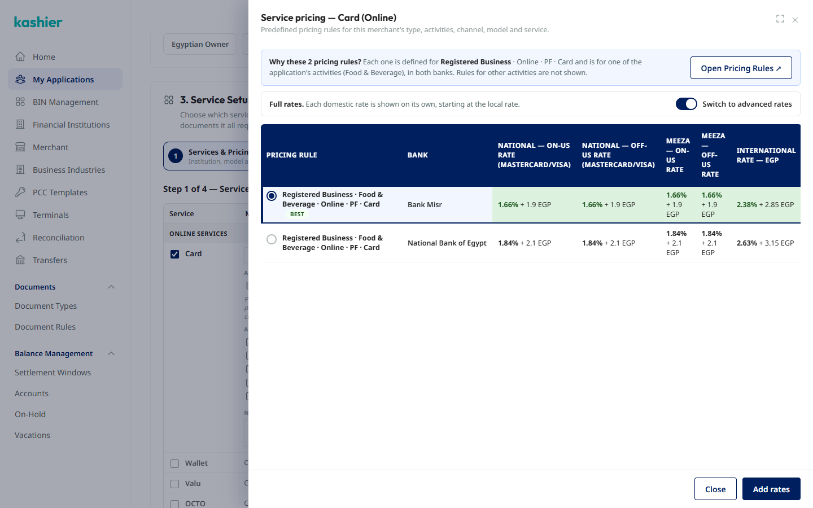
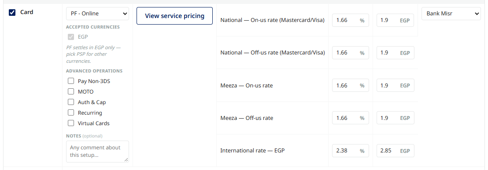
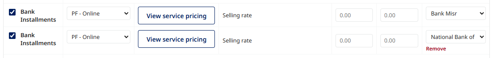
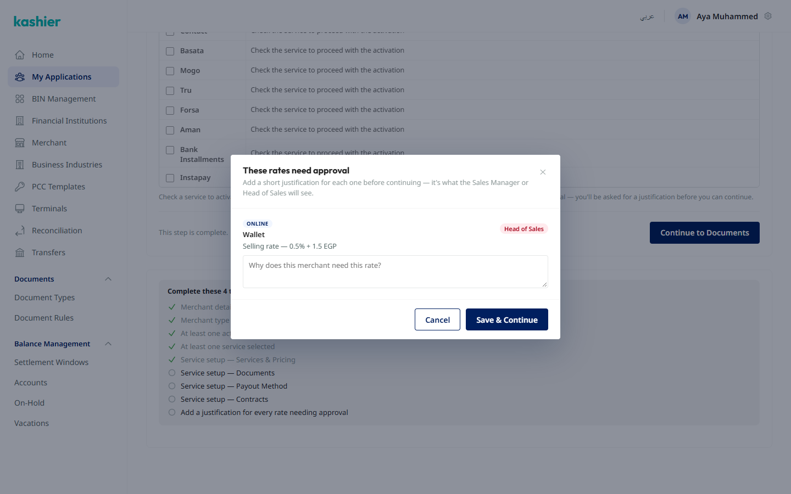
Submitted application, approval, logs, cancel
These views reuse the editable form in a read-only state, so they look editable.
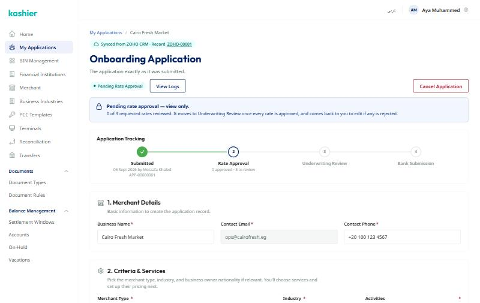
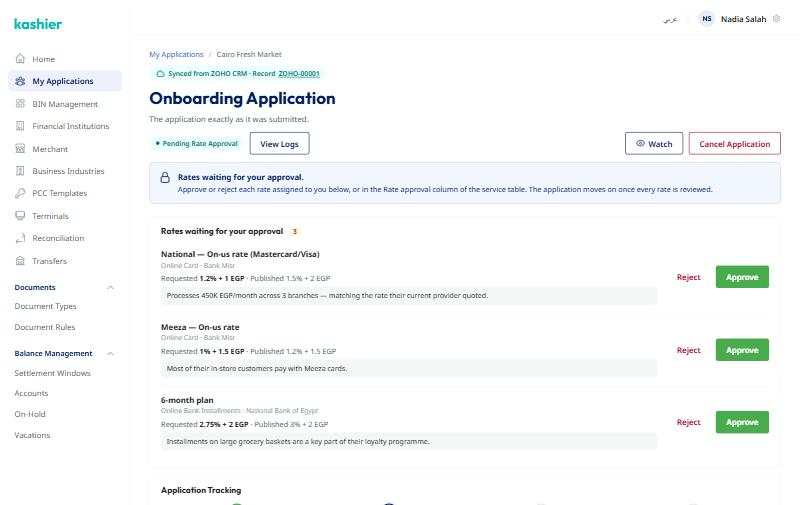
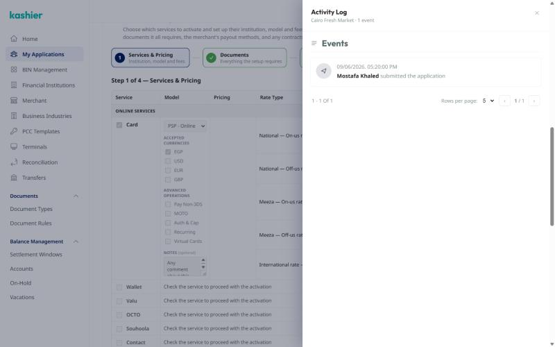
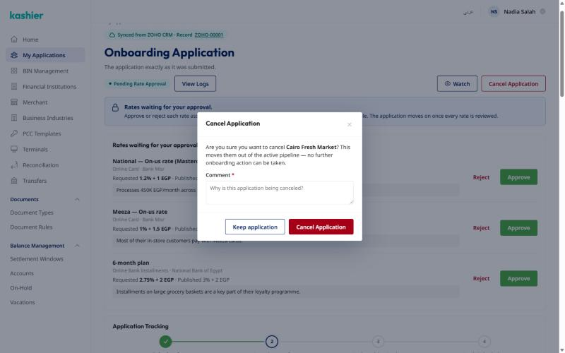
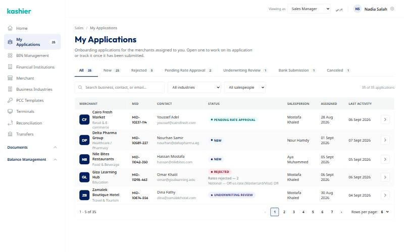
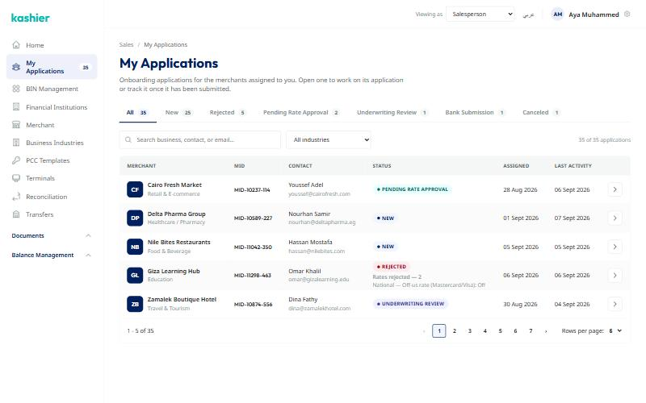
Problems, ranked
Blocker stops or misleads the user. Defect slows them down or breaks the styleguide. Polish is cosmetic. Each problem is linked to the story it touches. The fix only changes presentation, never the AC.
| Severity | Problem | Story | Direction for the fix |
|---|---|---|---|
| Blocker | You can't see what's left to submitThe "Complete these N" checklist sits at the bottom of a 3,000px page, below the step's own Continue button. The disabled "Continue to Documents" doesn't say why it's disabled. | FIN-28282 | Keep the checklist and next action visible the whole time (sticky rail or step footer). Disabled buttons say what's missing. |
| Blocker | The 26-row services table13 Online + 13 POS rows are always rendered, and almost all of them are empty. The rows you're working on get lost in the noise, and "Bank Installments" and "Instapay" are hard to tell apart in a scroll. | FIN-28405 | Choose services first (compact, grouped by Online / POS). Then show pricing rows only for the services you chose. The service list and order stay the same. |
| Blocker | View-only looks editableSubmitted, rate-approval and canceled applications render the same white inputs and chips, so the only sign they're read-only is a banner at the top. | FIN-28555 | A real read-only layout: description lists and a compact services summary, not disabled inputs. |
| Blocker | A rate below published is invisible until ContinueThe row shows no warning and the footer says "This step is complete". The approval modal is the first sign, and it doesn't show the published rate. | FIN-28503 | Flag the row as you type: "Below published 1% · needs Head of Sales". The footer counts rates that need a justification. Keep the modal at Continue. |
| Defect | Published pricing is a side path"View service pricing" is a secondary button, and manual entry is the default. The drawer (BEST, why these rules, fills the institution) is the better path, and once applied, the row doesn't show where the rates came from. | FIN-28414 | Show the BEST rule's rates on the block with an "Apply" action, the full drawer one click away, and "From rule · Applied" / "Custom pricing" on the block. |
| Defect | Extra institutions look like extra services"+ Add institution" copies the whole row, including the service checkbox and name. | FIN-28429 | Institutions become sub-rows inside one Bank Installments block. |
| Defect | Card options packed into the Model cellCurrencies, advanced operations and Notes are stacked under the Model select. This makes one row 270px tall, cuts off the fee inputs, and the Notes box is about 3 words wide. | FIN-28405 | Each service becomes a block: rate rows in a sub-table, with card options in a row of their own under it. |
| Defect | A stepper inside a card inside a long pageTwo navigation systems (page scroll + Service Setup stepper). The stepper's done/optional state is low contrast and hard to read. | FIN-28405 · 28515 · 28621 · 28546 | Pick one: either the whole application is steps, or sections with an anchored progress rail. |
| Defect | Rate approval appears in two placesThe same Approve / Reject buttons show up in the "waiting" panel and in the table's Rate approval column. There are three green primaries per screen, in a colour outside the system. | FIN-28612 | One approval surface with outline or ghost actions per rate. The table column only shows the decision. |
| Defect | The list doesn't fit its own data7 tabs wrap. MID, merchant name and dates wrap to 2–3 lines when the Salesperson column is on. The rejection reason is cut off in the Status cell. | FIN-28612 · 28555 | Filter bar (B2) + topbar search. Two-line cells. The rejection reason goes in a second line or tooltip. 10 rows per page. |
| Defect | Styleguide driftNumbered pagination, uppercase pills, an in-page search, native selects, off-system green buttons, and a role switcher in the product topbar. | all | Kashier styleguide v0.18: StatusChip, compact pager, Filter bar, one primary action per view, and a prototype-only role switcher. |
| Defect | Overlays are incompleteThe log drawer doesn't lock the page behind it and wastes space when there are few events. The Watch toast covers form fields on a phone. | FIN-28590 · 28612 | Drawer per patterns §3 (scroll-lock, bottom sheet on a phone). Toasts sit above the bottom edge, away from fields. |
| Defect | Phone is the desktop page, stackedTabs wrap to 4 rows, the list cards are mini label/value tables, and the header has 4 controls. | epic | Tabs scroll sideways, records become RecordCards, and the checklist becomes a bottom sheet. Secondary actions move into a ⋯ menu. |
| Polish | CopyThe page intro talks about the "required documents checklist" before there are any documents. Section numbers ("1.", "2.", "3.") are kept although the steps don't follow them. | FIN-28282 | Shorter intro. Numbering only where there's a real sequence. |
Prototype vs stories
These are places where the prototype doesn't match the AC. The redesign follows the story. Please confirm with Sara / Aya.
Chosen: C, with services split into view, add and edit
Feedback on C: one page shouldn't mix viewing, adding and settings. In application.html the services step is now a read-only list (model, institution, rates summary, status, Edit / Remove). "+ Add service" opens a drawer: pick the service, then set it up there. Edit opens the same drawer for one service. Published pricing sits inside it (rules with Best / Applied, the advanced rates switch, Add / Replace rates), and changes are saved or discarded together. POS terminals show on the POS group with a small "Change" popover. The rest of C is unchanged.
Three directions for the application form
Working prototypes with Delta Pharma data. All three share one core (pricing tiers, approval floors, the pricing drawer, justification modal, documents, payout, contracts, logs, cancel and submit), so the rules behave identically. They differ in page structure and in how services are added. Use the "State" menu in the top bar to jump to a new lead, an application in progress, or one that's ready to submit.
A · Sections + sticky rail
One page of numbered sections. Services are picked from two compact Online / POS checklists, and only the picked ones get rows in the pricing table. A sticky rail holds status, logs, cancel, the checklist (each item jumps to its spot) and Submit. Below 1280px the rail becomes a bottom bar.
- Closest to today, lowest dev risk
- Everything is in one scroll for reviewers
B · Full-page steps
Six steps with a vertical stepper: Merchant & criteria → Services & pricing → Documents → Payout → Contracts → Review & submit. Services are picked from a tile catalog (Online / POS tabs + search), then each one is set up in a drawer with a status: Needs setup, Ready, or Needs approval.
- Focused, one task at a time, good on iPad
- More clicks to jump back and fix a rate
Where they depart from the ACs (layout only)
- A: numbered sections replace the in-card 4-step stepper; the checklist and "Submit Merchant Application" live in the rail, not at the page bottom / Contracts footer.
- B: six full-page steps replace sections 1–3 + the 4-step stepper; Submit moves to a Review step.
- C: none structurally; adds a sticky "N left" bar.
- All three: rates below published are flagged on the row as they're typed (the modal at Continue stays), the modal also shows the published rate, and removing a service offers Undo for a few seconds (values are still cleared).
C · Services first
The stories' page structure kept as written: sections 1–2, the 4-step Service Setup and the checklist at the bottom. What changes is the services step: "+ Add service" opens a searchable picker, and each service becomes a block showing the best published pricing with "Apply". A slim sticky bar shows what's left.
- Smallest change to the ACs
- Fixes the worst screen directly